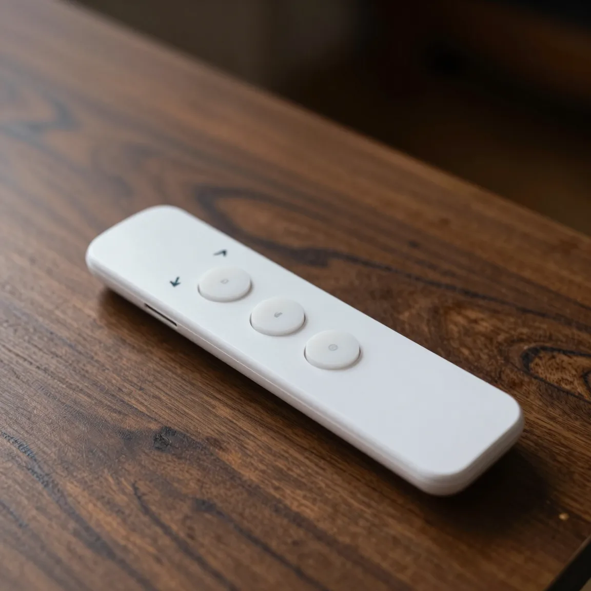
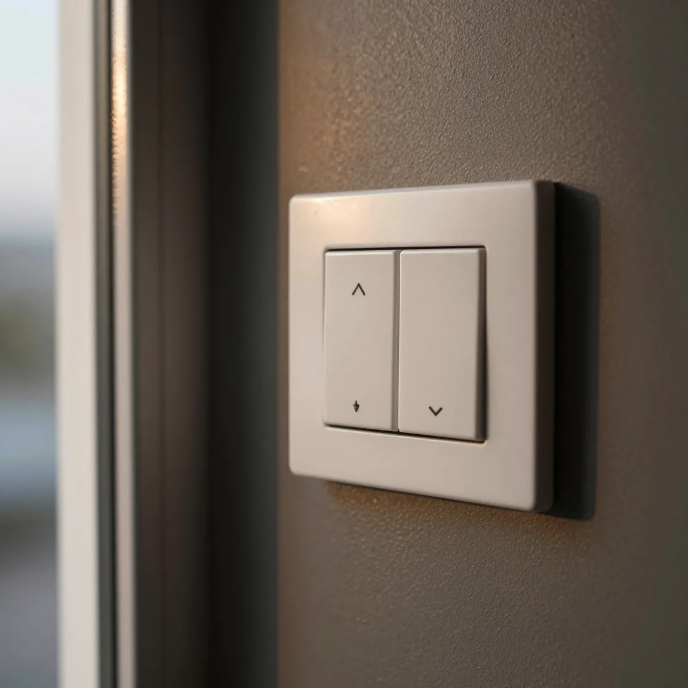
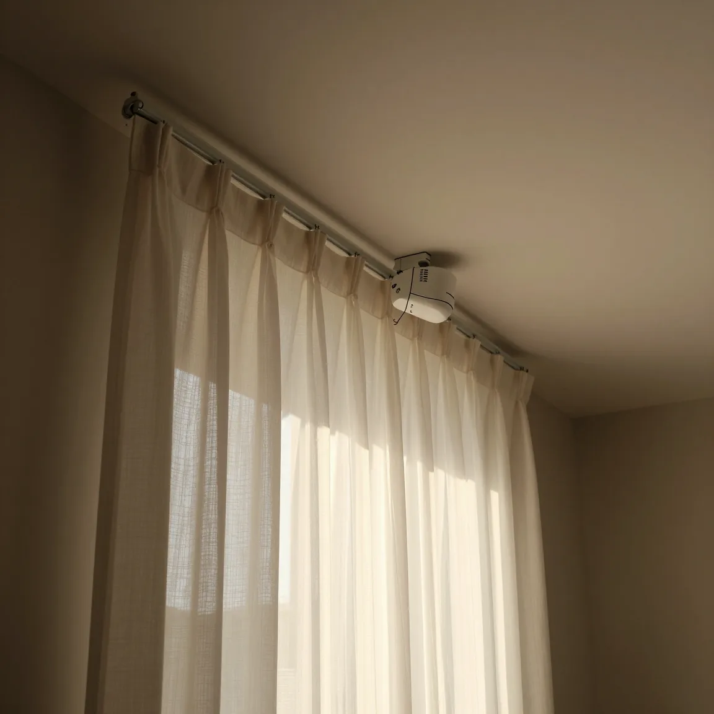

Control remoto
Una cortina o todas las del ambiente, desde el sillón.
Motorización · Roller y rieles eléctricos
Un motor en el roller o en el riel, y la cortina se abre o se cierra con un control o una tecla.
Una cortina o todas las del ambiente, desde el sillón.
Como una luz: sube, baja y para.
Varias cortinas que se mueven juntas.



Te explicamos en la visita cómo opera cada sistema.
El motor va dentro del tubo. No se ve.
Para cortinas de tela y doble cortinado: el riel corre los paños.
Donde no llegás a la cadena, o en ventanales de doble altura.
Trabajamos con motores de distintos proveedores; en la visita te recomendamos el que conviene a cada ventana. Si querés comparar, te enviamos la ficha de cada motor.
Nos contás qué ventanas querés motorizar.
Medimos y revisamos dónde va el motor y el comando.
Por escrito, con el sistema elegido.
Instalamos, te mostramos cómo se usa y te seguimos acompañando.
Visita y presupuesto sin cargo, en CABA y provincia de Buenos Aires.